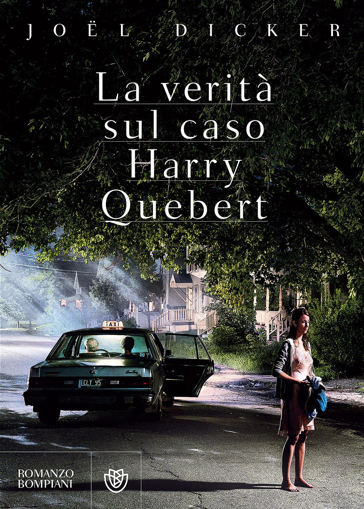

Site Contents
La verità sul caso Harry Quebert
Il cospicuo racconto è un giallo deduttivo ambientato per lo più nella fittizia cittadina di Aurora nello stato del New Hampshire. Si svolge nel 2008 con numerosi flashback nel 1975, anno in cui fu commesso l'omicidio della giovane Nola Kellergan. Trentatrè anni dopo la scomparsa della ragazza viene ritrovato per caso il suo corpo sepolto nella tenuta del famoso scrittore Harry Quebert. L'amico Marcus Goldman conduce delle personali indagini per scagionare il proprio maestro d'arte e di vita accusato di omicidio.
Il romanzo è stato un bestseller in Europa dove ha raggiunto i vertici delle classifiche e in Italia è stato in top 10 per diverse settimane. Le versioni in lingua inglese sono uscite, rispettivamente, il primo maggio 2014 nel Regno Unito a cura di MacLehose Press, e il 27 negli USA a cura di Penguin.
Con questo romanzo l'autore è stato insignito nel 2012 dei premi Goncourt des lycèens e Grand Prix du roman de l'Acadèmie française.
Incipit
|
Il giorno della scomparsa
(Sabato 30 agosto 1975)
"Centrale di polizia, qual è il suo problema?"
"Mi chiamo Debora Cooper, abito in Side Creek Lane. Credo di aver appena visto una ragazza inseguita da un uomo nella foresta."
"Cos'è successo esattamente?"
"Non lo so! Ero affacciata alla finestra, stavo guardando verso la foresta, e a un certo punto ho visto questa ragazza correre in mezzo agli alberi. Dietro di lei c'era un uomo... Credo che stesse cercando di sfuggirgli."
(A destra la copertina del libro)
|

|
Trama
New York, primavera 2008. Marcus Goldman, un giovane scrittore diventato famoso grazie al suo primo libro, è alle prese con il blocco dello scrittore e con la pressione di dover scrivere un altro best seller prima dell’autunno a causa degli obblighi contrattuali con la casa editrice. Disperato, chiama il suo amico e mentore, Harry Quebert, uno degli scrittori più stimati d’America, che gli propone di andare a stare a casa sua ad Aurora, una piccola cittadina del New Hampshire, come quando era uno studente. Marcus accetta e si trasferisce dall’amico per qualche settimana.
Durante la sua permanenza, però, scopre un segreto: nell’estate del 1975, un anno prima di pubblicare Le origini del male (il romanzo epistolare che lo avrebbe reso famoso), Harry, allora 34enne, aveva avuto una storia con Nola Kellergan, una ragazza di 15 anni che era poi scomparsa alla fine di agosto di quello stesso anno, dopo essere stata avvistata da una donna anziana, Deborah Cooper, che aveva chiamato la polizia ed era stata uccisa subito dopo. I due uomini decidono di non parlare più della scoperta, e Marcus torna a New York senza aver fatto progressi per il suo libro.
All’inizio di giugno, però, Nola torna nella vita di entrambi gli scrittori: il suo cadavere viene infatti rinvenuto nel giardino di Harry, con vicino il manoscritto originale di Le origini del male con una dedica manoscritta per lei. Lo scrittore, che confessa di aver avuto una relazione con lei e di aver scritto il libro per lei, viene accusato dell’omicidio della ragazza e della testimone e rischia la pena di morte. Convinto dell’innocenza dell’amico, Marcus torna ad Aurora per condurre un’indagine e trovare prove che lo scagionino. Durante l’indagine, conosce il sergente Gahalowood, un poliziotto burbero ma professionale. Qualcuno tuttavia non vuole che si indaghi: Marcus inizia infatti a ricevere lettere minatorie e l’automobile di Harry viene bruciata. Lo scrittore, comunque, non si lascia intimidire: inizia ad andare a trovare Harry in prigione e a farsi raccontare dell’estate 1975. Lui gli dice che, il giorno della scomparsa, Nola doveva raggiungerlo in un motel, in modo che i due potessero scappare insieme. Intervista anche le persone più vicine a Nola: suo padre, il reverendo Kellergan; il capitano Pratt, che nel 1975 era il capo della polizia di Aurora; Travis Dawn, allora assistente di Pratt che, insieme al capitano, aveva risposto alla chiamata della testimone; Jenny Quinn, moglie di Dawn e proprietaria di un Dinner di Aurora; i suoi ex-compagni di scuola. Una di questi, la migliore amica di Nola, gli rivela che la ragazza veniva picchiata e che, sempre nel 1975, andava regolarmente a casa di Elijah Stern, un ricco uomo d’affari, che era anche il proprietario della casa di Harry, prima che lo scrittore la comprasse. Intanto, la scadenza per la consegna del libro di Marcus si avvicina, ma lui riesce a spostarla alla fine di agosto promettendo un libro sulla relazione tra Nola ed Harry. Va anche a casa di Stern e il magnate gli dice chi era il suo autista nel 1975: Luther Caleb, un uomo con un talento enorme per la pittura, ma sfigurato, che era stato trovato morto qualche settimana dopo la scomparsa. Prima di andarsene, Marcus si intrufola in un ufficio dove trova e fotografa un ritratto di Nola, ma, non avendo dovuto essere in quella stanza, non può usarlo come prova.
Dalle interrogazioni lo scrittore scopre che Pratt, durante la ricerca di Nola, aveva trascurato alcune piste apparentemente ovvie da seguire, mancando di interrogare alcune persone. Va a interrogarlo con Gahalowood, e ottiene una confessione: aveva scoperto la storia tra Harry e Nola, ma lei gli aveva praticato una fellatio per convincerlo a non parlarne a nessuno, e qualche tempo dopo lui l’aveva costretta a ripetere la prestazione. L’ex-poliziotto viene così arrestato e si scarcera su cauzione quasi immediatamente, ma non prima di aver rivelato alla polizia che Nola si incontrava con Stern. Il sergente riesce così a perquisire la casa di Stern ed a usare il ritratto come prova. Il magnate afferma che il ritratto era stato dipinto da Caleb, e che Nola aveva accettato di posare in cambio dell’esenzione di Harry dal pagare l’affitto di casa sua, finché non avesse finito il libro. Arrivano anche i risultati della perizia grafologica sulla dedica del manoscritto che confermano che non era stata scritta da Harry. Lo scrittore viene quindi scagionato.
Marcus inizia a scrivere il libro e manda una bozza all’editore. Questa viene però rubata e parte una fuga di notizie che la portano su tutti i giornali, facendo perdere a Marcus l’amicizia di tutta Aurora. Inoltre, la casa di Harry viene incendiata e distrutta. Il giovane scrittore si mette comunque all’opera per risolvere il caso e finire il libro. Insieme a Gahalowood, interroga la sorella di Luther, che gli dice che il fratello era rimasto sfigurato da un pestaggio e da allora aveva avuto una strana fissazione per le donne bionde, e che era innamorato anche lui di Nola. Inoltre, per aver importunato Jenny per provare a convincerla a farsi dipingere, era odiato da Dawn, che era un suo spasimante. La colpa, provata dalla grafia della dedica, ricade così su Caleb. Nel frattempo, Pratt viene ucciso.
Marcus si riconcilia con Harry e finisce il libro, ottenendo un enorme successo. All’improvviso, però, si scopre un dato che minaccia di invalidare l’intero libro: la madre di Nola, che nel racconto la picchiava, in realtà era morta anni prima della scomparsa della figlia. Cercando di chiarire la cosa, Marcus scopre che Nola soffriva di episodi dissociativi, durante uno dei quali, da piccola, aveva dato fuoco a casa sua e ucciso la madre; il pastore della sua comunità religiosa, convinto che la piccola fosse posseduta, aveva tentato di esorcizzarla con dei finti annegamenti. Il reverendo Kellergan si era poi trasferito ad Aurora con la figlia, ma lei era rimasta traumatizzata, e da allora le sue crisi erano peggiorate: alla dolce Nola, sognatrice e romantica, si era aggiunta la personalità abusiva e dominante della madre, che Nola assumeva durante le sue crisi e che le infliggeva le violente punizioni fisiche e gli abusi verbali che il reverendo copriva alzando al massimo il volume del proprio giradischi.
Lo scrittore ne parla con Kellergan, che gli dice che Nola e Harry si scrivevano regolarmente, e che quest’ultimo aveva trascritto le lettere nel suo romanzo. La sera della scomparsa, il reverendo aveva trovato una lettera di addio sul letto di Nola, e dice che ritiene che la tristezza per l’addio possa aver scatenato una crisi durante la quale Nola è scappata di casa. Per una coincidenza, la polizia ferma Robert Quinn, il padre di Jenny, che appare molto teso e perciò viene interrogato. Lui confessa di aver ucciso Nola, ma alcune incongruenze convincono Marcus che non sta dicendo la verità. Quinn ammette di star proteggendo la figlia e il genero, che vengono arrestati subito prima di scappare in Venezuela. Dawn ammette di aver ucciso Luther insieme a Pratt; assieme a Luther c'era Nola, che era riuscita a fuggire e a rifugiarsi in casa di Deborah Cooper, ed entrambe erano state uccise perché non rivelassero alcunché. Colpito dal risultato delle indagini, Stern convoca Marcus per rivelargli che era Luther a scrivere a Nola.
Marcus capisce quindi che era stato Luther Caleb, non Harry, a scrivere Le origini del male, e a regalarlo a Nola come ricordo di sé. Chiama l’amico, che ammette di aver accettato di recensire il manoscritto e poi di averlo rubato, una volta scoperto che l’autore era morto. Il libro che Harry scrisse quell’estate non era dunque Le origini del male, ma I gabbiani di Aurora, che non è mai stato pubblicato, ma di cui esiste ancora il manoscritto.
Marcus finalmente capisce ciò che accadde nel giorno della scomparsa: Nola, scappata di casa dopo la crisi, aveva incontrato Luther, che si era fermato lì vicino in auto per vedere la reazione della ragazza. Lui le aveva rivelato di essere il vero autore delle lettere, e lei gli aveva detto di portarla da Harry. Ma erano stati visti da Dawn, che, convinto che Luther volesse fare del male a Nola, l’aveva seguito per dargli una lezione. Vedendolo, i due erano scesi dall’auto e avevano iniziato a correre, Nola davanti e Luther dietro. Erano stati visti da una donna che abitava nelle vicinanze, che, convinta che la ragazza fosse inseguita, aveva chiamato la polizia. Dawn aveva risposto alla chiamata e contattato Pratt. I due poliziotti avevano poi fermato Luther e lo avevano pestato a morte, poi avevano inseguito Nola per non farla parlare. Lei si era rifugiata dalla donna, ma Dawn l’aveva raggiunta, trattenendola mentre Nola rivelava alla signora che i due avevano ucciso Luther. Pratt spara alla donna e Nola approfitta di un momento di distrazione di Dawn per riprovare a scappare, solo per poi essere riacciuffata dai due poliziotti ed essere uccisa da Dawn col suo manganello. Lui e Pratt l’avevano poi nascosta nel giardino di Harry, assieme alla sacca che portava con sé, senza neanche controllare cosa contenesse, cioè la copia dattiloscritta del romanzo scritto da Luther, con la sua dedica in copertina. Dawn porta via con sé la collana di Nola, come monito per se stesso, affinché non dimenticasse il crimine di cui si era macchiato. Avevano poi finto che la morte di Luther fosse dovuta a una caduta da una scogliera.
Con queste nuove informazioni, Marcus scrive un altro libro, che riscuote un enorme successo. I gabbiani di Aurora viene pubblicato a nome di Luther Caleb, ristabilendone il nome e l'onore. Quindi Harry, dopo aver salutato il suo allievo un'ultima volta, fa perdere le sue tracce.
Adattamento televisivo
Del libro è stato realizzato un adattamento televisivo, intitolato anch'esso La verità sul caso Harry Quebert, presentato nel corso della prima edizione del Canneseries, tenutosi a Cannes dal 4 all'11 aprile 2018. La minisierie conta dieci episodi, per la regia di Jean-Jaques Annaud. Il cast include Patrick Dempsey, (nell'immagine a destra) scelto per il ruolo del protagonista Harry Quebert.
|

|
Torna all'inizio